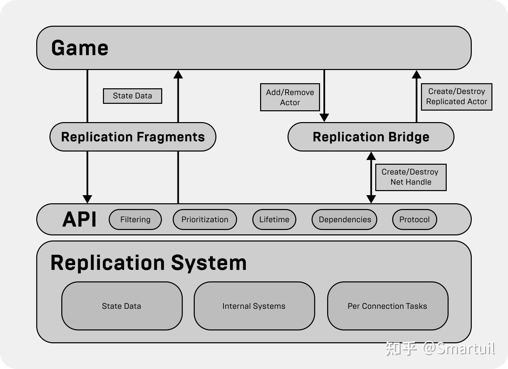

更好的阅读体验：
🌐 Iris 网络复制系统技术分析 - 第一部分：系统概述与架构设计

💡 1.1 Iris 简介
什么是 Iris？
Iris (Iris Replication System) 是虚幻引擎 5 中引入的新一代网络复制系统，旨在替代传统的基于 Actor Channel 的复制架构。Iris 采用全新的数据驱动设计，为大规模多人游戏提供更高的性能和更好的可扩展性。
⚙️ 如何启用 Iris？
Iris 通过引擎插件系统启动。启用步骤：
- 启用 Iris 插件：在项目设置或
.uproject文件中启用位于Engine/Plugins/Experimental/Iris/目录下的 Iris 插件 - 插件自动加载 IrisCore 模块：Iris 插件启动时会自动加载核心模块
// 位于: Engine/Plugins/Experimental/Iris/Source/Iris/Private/Iris/IrisModule.cpp
class FIrisModule : public IModuleInterface
{
private:
virtual void StartupModule() override
{
#if UE_WITH_IRIS
FModuleManager::Get().LoadModule("IrisCore", ELoadModuleFlags::None);
#endif
}
};
IMPLEMENT_MODULE(FIrisModule, Iris);插件配置文件 (Iris.uplugin)：
{
"FriendlyName": "Iris",
"Description": "Iris networking.",
"Category": "Networking",
"EnabledByDefault": false,
"IsExperimentalVersion": true,
"Modules": [
{
"Name": "Iris",
"Type": "Runtime",
"LoadingPhase": "Default"
}
]
}注意：Iris 目前标记为实验性功能（IsExperimentalVersion: true），默认不启用（EnabledByDefault: false）。
还需要将以下控制台变量设置为 1
// 位于: Engine/Source/Runtime/Experimental/Iris/Core/Public/Iris/IrisConfig.h static int32 CVarUseIrisReplication = 0; static FAutoConsoleVariableRef CVarUseIrisReplicationRef( TEXT("net.Iris.UseIrisReplication"), CVarUseIrisReplication, TEXT("Enables Iris replication system. 0 will fallback to legacy replicationsystem."), ECVF_Default ); namespace UE::Net { /** 返回是否应该使用 Iris 作为首选复制系统 */ IRISCORE_API bool ShouldUseIrisReplication(); /** 设置是否使用 Iris 复制系统 */ IRISCORE_API void SetUseIrisReplication(bool EnableIrisReplication); /** 获取命令行中设置的复制系统类型，返回 Default 表示未通过命令行设置 */ IRISCORE_API EReplicationSystem GetUseIrisReplicationCmdlineValue(); }
🎯 设计目标与动机
Iris 的设计围绕以下核心目标：
| 目标 | 说明 |
|---|---|
| 🚀 更高的性能 | 通过数据驱动设计、缓存友好的内存布局和并行处理优化 |
| 📈 更好的可扩展性 | 支持大规模多人游戏场景（数千个复制对象） |
| 🧩 更灵活的架构 | 模块化设计，过滤器和优先级策略可自由替换 |
| 🎛️ 更精细的控制 | 提供更细粒度的过滤、优先级和带宽管理 |
| ⚡ 更低的延迟 | 优化的序列化路径和增量压缩支持 |
⚖️ 与传统 NetDriver 复制系统的对比
| 特性 | 传统系统 | Iris |
|---|---|---|
| 架构基础 | Actor Channel | ReplicationSystem + Bridge |
| 状态管理 | 直接操作属性 | ReplicationState + Fragment |
| 序列化 | FArchive (通用) | NetSerializer (专用量化) |
| 过滤机制 | IsNetRelevantFor() 虚函数 | 可替换 Filter 系统 |
| 优先级机制 | NetPriority 属性 | 可替换 Prioritizer 系统 |
| 脏数据检测 | 每帧比较所有属性 | Push Model + 轮询频率控制 |
| 内存布局 | 分散在各个 Actor | 连续内存块（缓存友好） |
| 并行处理 | 有限支持 | 原生并行任务支持 |
| 增量压缩 | 不支持 | 原生支持 |
🎮 适用场景
Iris 特别适合以下场景：
- 🌍 大规模开放世界游戏
- 大量需要复制的对象
- 复杂的空间过滤需求
- 关卡流送支持
- 🪂 大逃杀/Battle Royale 类型
- 高玩家数量（100+）
- 动态的可见性管理
- 带宽敏感
- ⚔️ MMO 类型游戏
- 海量复制对象
- 复杂的组过滤需求
- 区域/分片支持
- 🏆 竞技类游戏
- 低延迟要求
- 精确的优先级控制
- 高频更新
🏗️ 1.2 整体架构层次
架构分层图解

该图片源于虚幻引擎Iris官方文档
Iris 采用清晰的分层架构设计，从上到下共 7 层：
┌─────────────────────────────────────────────────────────────┐
│ 🎮 Layer 1: Game Layer │
│ ───────────────────────────────────────────────────────── │
│ 类: AActor, UActorComponent │
│ 职责: 开发者编写的游戏逻辑层，包含需要复制的对象 │
└─────────────────────────────────────────────────────────────┘
│
│ 注册复制对象
▼
┌─────────────────────────────────────────────────────────────────────────────────────────────────────┐
│ 🌉 Bridge 层（桥接层） │
│ ┌───────────────────────────────────────────────────────────────────────────────────────────────┐ │
│ │ 🔌 Layer 2: Engine Bridge │ │
│ │ 类: UEngineReplicationBridge │ │
│ │ 职责: Actor/Component 生命周期 │ NetDriver 集成 │ 关卡流送 │ │
│ └───────────────────────────────────────────────────────────────────────────────────────────────┘ │
│ │ 继承 │
│ ▼ │
│ ┌───────────────────────────────────────────────────────────────────────────────────────────────┐ │
│ │ 🧩 Layer 3: Object Bridge │ │
│ │ 类: UObjectReplicationBridge │ │
│ │ 职责: UObject 复制管理 │ 过滤器配置 │ 休眠管理 │ 依赖管理 │ │
│ └───────────────────────────────────────────────────────────────────────────────────────────────┘ │
│ │ 继承 │
│ ▼ │
│ ┌───────────────────────────────────────────────────────────────────────────────────────────────┐ │
│ │ 🔗 Layer 4: Replication Bridge │ │
│ │ 类: UReplicationBridge │ │
│ │ 职责: 网络对象创建/销毁 │ 子对象管理 │ 复制协议 │ │
│ └───────────────────────────────────────────────────────────────────────────────────────────────┘ │
└─────────────────────────────────────────────────────────────────────────────────────────────────────┘
│
│ 关联
▼
┌─────────────────────────────────────────────────────────────┐
│ 🧠 Layer 5: Replication System │
│ ───────────────────────────────────────────────────────── │
│ 类: UReplicationSystem │
│ 职责: 连接管理 │ 过滤 │ 优先级 │ 组管理 │ RPC │ 主循环 │
└─────────────────────────────────────────────────────────────┘
│
│ 使用
▼
┌─────────────────────────────────────────────────────────────┐
│ 📦 Layer 6: Data Streams │
│ ───────────────────────────────────────────────────────── │
│ 类: UDataStream │
│ 职责: 序列化 │ 可靠/不可靠传输 │ 带宽管理 │ 增量压缩 │
└─────────────────────────────────────────────────────────────┘
│
│ 写入/读取
▼
┌─────────────────────────────────────────────────────────────┐
│ 🌐 Layer 7: Network Transport │
│ ───────────────────────────────────────────────────────── │
│ 类: UNetConnection │
│ 职责: 底层网络传输 │ 包投递状态 │
└─────────────────────────────────────────────────────────────┘层级速查表：
| 层级 | 名称 | 核心类 | 一句话职责 |
|---|---|---|---|
| 1 | Game Layer | AActor, UActorComponent | 你的游戏代码 |
| 2 | Engine Bridge | UEngineReplicationBridge | 连接引擎与 Iris |
| 3 | Object Bridge | UObjectReplicationBridge | 管理 UObject 复制 |
| 4 | Replication Bridge | UReplicationBridge | 网络对象生命周期 |
| 5 | Replication System | UReplicationSystem | 核心调度中心 |
| 6 | Data Streams | UDataStream | 数据序列化传输 |
| 7 | Network Transport | UNetConnection | 底层网络收发 |
💡 理解要点：Layer 2-4 是继承关系（Bridge 层），负责将游戏对象”翻译”成网络对象；Layer 5 是核心调度器，协调所有复制逻辑；Layer 6-7 负责数据传输。
📋 各层职责划分
🎮 1. Game Layer（游戏层）
游戏开发者编写的业务逻辑层：
// 示例：一个需要复制的 Actor
UCLASS()
class AMyReplicatedActor : public AActor
{
GENERATED_BODY()
// 需要复制的属性
UPROPERTY(Replicated)
float Health;
UPROPERTY(Replicated)
FVector Position;
// 复制属性注册
void GetLifetimeReplicatedProps(TArray<FLifetimeProperty>& OutLifetimeProps) const override
{
Super::GetLifetimeReplicatedProps(OutLifetimeProps);
DOREPLIFETIME(AMyReplicatedActor, Health);
DOREPLIFETIME(AMyReplicatedActor, Position);
}
};🔌 2. UEngineReplicationBridge（引擎复制桥接）
处理 Actor 和 Component 的复制生命周期：
// 位于: Engine/Source/Runtime/Engine/Public/Net/Iris/ReplicationSystem/EngineReplicationBridge.h
UCLASS(Transient, MinimalAPI)
class UEngineReplicationBridge final : public UObjectReplicationBridge
{
public:
// 创建桥接实例
static UEngineReplicationBridge* Create(UNetDriver* NetDriver);
// 设置 NetDriver
void SetNetDriver(UNetDriver* InNetDriver);
UNetDriver* GetNetDriver() const { return NetDriver; }
// ===== Actor 复制 =====
// 开始复制一个 Actor 及其注册的 Component 和 SubObject
FNetRefHandle StartReplicatingActor(AActor* Instance, const FActorReplicationParams& Params);
// 停止复制 Actor，会销毁其句柄及其 Component 和 SubObject 的句柄
void StopReplicatingActor(AActor* Actor, EEndPlayReason::Type EndPlayReason);
// ===== Component 复制 =====
// 开始复制 ActorComponent 及其注册的 SubObject
FNetRefHandle StartReplicatingComponent(FNetRefHandle RootObjectHandle,
UActorComponent* ActorComponent);
// 停止复制 Component
void StopReplicatingComponent(UActorComponent* ActorComponent,
EEndReplicationFlags EndReplicationFlags);
// ===== SubObject 复制 =====
FNetRefHandle StartReplicatingSubObject(UObject* SubObject,
const FSubObjectReplicationParams& Params);
// ===== 关卡过滤 =====
// Actor 切换关卡时更新关卡组
void ActorChangedLevel(const AActor* Actor, const ULevel* PreviousLevel);
// ===== 网络指标 =====
// 收集网络指标用于分析
void ConsumeNetMetrics(TArray<FAnalyticsEventAttribute>& OutAttrs);
};🧩 3. UObjectReplicationBridge（对象复制桥接）
提供 UObject 级别的复制管理：
// 位于: Engine/Source/Runtime/Experimental/Iris/Core/Public/Iris/ReplicationSystem/ObjectReplicationBridge.h
UCLASS(Transient, MinimalApi)
class UObjectReplicationBridge : public UReplicationBridge
{
public:
// ===== 对象查询 =====
// 从句柄获取对象
UObject* GetReplicatedObject(FNetRefHandle Handle) const;
// 从对象获取句柄
FNetRefHandle GetReplicatedRefHandle(const UObject* Object,
EGetRefHandleFlags Flags = EGetRefHandleFlags::None) const;
// 从 NetHandle 获取句柄
FNetRefHandle GetReplicatedRefHandle(FNetHandle Handle) const;
// ===== 开始复制 =====
// 开始复制根对象
FNetRefHandle StartReplicatingRootObject(UObject* Instance,
const FRootObjectReplicationParams& Params,
FNetObjectFactoryId NetFactoryId);
// 开始复制子对象
FNetRefHandle StartReplicatingSubObject(UObject* Instance,
const FSubObjectReplicationParams& Params,
FNetObjectFactoryId NetFactoryId);
// ===== 停止复制 =====
void StopReplicatingNetObject(UObject* Instance,
EEndReplicationFlags Flags = EEndReplicationFlags::Destroy);
// ===== 依赖关系 =====
void AddDependentObject(FNetRefHandle Parent, FNetRefHandle DependentObject,
EDependentObjectSchedulingHint Hint);
void RemoveDependentObject(FNetRefHandle Parent, FNetRefHandle DependentObject);
// ===== 休眠管理 =====
void SetObjectWantsToBeDormant(FNetRefHandle Handle, bool bWantsToBeDormant);
bool GetObjectWantsToBeDormant(FNetRefHandle Handle) const;
void NetFlushDormantObject(FNetRefHandle Handle);
// ===== 轮询频率 =====
void SetPollFrequency(FNetRefHandle RootHandle, float PollFrequency);
// ===== 动态过滤配置 =====
void SetClassDynamicFilterConfig(FName ClassPathName, FNetObjectFilterHandle FilterHandle, FName FilterProfile=NAME_None);
void SetClassDynamicFilterConfig(FName ClassPathName, FName FilterName, FName FilterProfile=NAME_None);
// ===== 子对象网络条件 =====
void SetSubObjectNetCondition(FNetRefHandle SubObjectHandle, ELifetimeCondition Condition);
};🔗 4. UReplicationBridge（复制桥接基类）
网络对象的基础管理：
| 职责 | 说明 |
|---|---|
| 网络对象创建/销毁 | 管理复制对象的生命周期 |
| 子对象管理 | 处理 SubObject 的注册和注销 |
| 关卡组管理 | 支持关卡流送的过滤组 |
| 复制协议管理 | 定义对象的复制规则 |
🧠 5. UReplicationSystem（复制系统核心）
Iris 的核心管理类：
// 位于: Engine/Source/Runtime/Experimental/Iris/Core/Public/Iris/ReplicationSystem/ReplicationSystem.h
UCLASS(transient)
class UReplicationSystem : public UObject
{
public:
// ===== 创建参数 =====
struct FReplicationSystemParams
{
UReplicationBridge* ReplicationBridge = nullptr;
uint32 MaxReplicatedObjectCount = 65536U; // 最大复制对象数
uint32 InitialNetObjectListCount = 65536U; // 初始对象列表大小
uint32 NetObjectListGrowCount = 16384U; // 列表增长步长
uint32 PreAllocatedMemoryBuffersObjectCount = 65536U; // 预分配内存缓冲区对象数
uint32 MaxReplicationWriterObjectCount = 0; // 最大复制写入对象数
uint32 MaxDeltaCompressedObjectCount = 2048U; // 最大增量压缩对象数
uint32 MaxNetObjectGroupCount = 2048U; // 最大组数量
bool bIsServer = false; // 是否为服务器
bool bAllowObjectReplication = false; // 是否允许对象复制
FForwardNetRPCCallDelegate ForwardNetRPCCallDelegate; // RPC 转发委托
FNetTokenStore* NetTokenStore = nullptr; // NetToken 存储
};
// ===== 系统信息 =====
uint32 GetId() const; // 获取系统唯一 ID
uint32 GetMaxConnectionCount() const; // 获取最大连接数
bool IsServer() const; // 是否为服务器
bool AllowObjectReplication(); // 是否允许对象复制
// ===== 生命周期 =====
void PreSendUpdate(const FSendUpdateParams& Params); // 发送前更新（带参数）
void PreSendUpdate(float DeltaSeconds); // 发送前更新
void SendUpdate(TFunctionRef<void(TArrayView<uint32>)> SendFunction);
void PostSendUpdate(); // 发送后更新
// ===== 连接管理 =====
void AddConnection(uint32 ConnectionId);
void RemoveConnection(uint32 ConnectionId);
bool IsValidConnection(uint32 ConnectionId) const;
void SetConnectionGracefullyClosing(uint32 ConnectionId) const; // 设置连接优雅关闭
void SetReplicationEnabledForConnection(uint32 ConnectionId, bool bEnabled);
bool IsReplicationEnabledForConnection(uint32 ConnectionId) const;
// ===== 过滤 =====
bool SetFilter(FNetRefHandle Handle, FNetObjectFilterHandle FilterHandle, FName FilterProfile=NAME_None);
FNetObjectFilterHandle GetFilterHandle(FName FilterName) const;
UNetObjectFilter* GetFilter(FName FilterName) const;
FName GetFilterName(FNetObjectFilterHandle Filter) const;
void SetOwningNetConnection(FNetRefHandle Handle, uint32 ConnectionId);
uint32 GetOwningNetConnection(FNetRefHandle Handle) const;
bool SetConnectionFilter(FNetRefHandle Handle, const TBitArray<>& Connections, ENetFilterStatus ReplicationStatus);
// ===== 组管理 =====
FNetObjectGroupHandle CreateGroup(FName GroupName);
void DestroyGroup(FNetObjectGroupHandle GroupHandle);
FNetObjectGroupHandle FindGroup(FName GroupName) const;
void AddToGroup(FNetObjectGroupHandle GroupHandle, FNetRefHandle Handle);
void RemoveFromGroup(FNetObjectGroupHandle GroupHandle, FNetRefHandle Handle);
void RemoveFromAllGroups(FNetRefHandle Handle);
bool IsInGroup(FNetObjectGroupHandle GroupHandle, FNetRefHandle Handle) const;
bool IsValidGroup(FNetObjectGroupHandle GroupHandle) const;
bool AddExclusionFilterGroup(FNetObjectGroupHandle GroupHandle);
bool AddInclusionFilterGroup(FNetObjectGroupHandle GroupHandle);
void RemoveGroupFilter(FNetObjectGroupHandle GroupHandle);
void SetGroupFilterStatus(FNetObjectGroupHandle GroupHandle, uint32 ConnectionId, ENetFilterStatus Status);
// ===== 特殊组 =====
FNetObjectGroupHandle GetNotReplicatedNetObjectGroup() const; // 不复制组
FNetObjectGroupHandle GetNetGroupOwnerNetObjectGroup() const; // 所有者组
FNetObjectGroupHandle GetNetGroupReplayNetObjectGroup() const; // 回放组
// ===== 子对象过滤 =====
FNetObjectGroupHandle GetOrCreateSubObjectFilter(FName GroupName);
FNetObjectGroupHandle GetSubObjectFilterGroupHandle(FName GroupName) const;
void SetSubObjectFilterStatus(FName GroupName, FConnectionHandle ConnectionHandle, ENetFilterStatus ReplicationStatus);
void RemoveSubObjectFilter(FName GroupName);
// ===== 优先级 =====
void SetStaticPriority(FNetRefHandle Handle, float Priority);
bool SetPrioritizer(FNetRefHandle Handle, FNetObjectPrioritizerHandle PrioritizerHandle);
FNetObjectPrioritizerHandle GetPrioritizerHandle(FName PrioritizerName) const;
UNetObjectPrioritizer* GetPrioritizer(FName PrioritizerName) const;
void SetReplicationView(uint32 ConnectionId, const FReplicationView& View);
// ===== RPC =====
bool SendRPC(const UObject* RootObject, const UObject* SubObject,
const UFunction* Function, const void* Parameters);
bool SendRPC(uint32 ConnectionId, const UObject* RootObject,
const UObject* SubObject, const UFunction* Function, const void* Parameters);
bool SetRPCSendPolicyFlags(const UFunction* Function, ENetObjectAttachmentSendPolicyFlags SendFlags);
void ResetRPCSendPolicyFlags();
// ===== NetBlob =====
bool RegisterNetBlobHandler(UNetBlobHandler* Handler);
bool QueueNetObjectAttachment(uint32 ConnectionId, const FNetObjectReference& TargetRef,
const TRefCountPtr<FNetObjectAttachment>& Attachment);
// ===== 复制条件 =====
bool SetReplicationConditionConnectionFilter(FNetRefHandle Handle, EReplicationCondition Condition,
uint32 ConnectionId, bool bEnable);
bool SetReplicationCondition(FNetRefHandle Handle, EReplicationCondition Condition, bool bEnable);
// ===== 增量压缩 =====
void SetDeltaCompressionStatus(FNetRefHandle Handle, ENetObjectDeltaCompressionStatus Status);
// ===== 其他 =====
void ForceNetUpdate(FNetRefHandle Handle); // 强制更新
void MarkDirty(FNetRefHandle Handle); // 标记脏
void SetIsNetTemporary(FNetRefHandle Handle); // 设为临时对象
void TearOffNextUpdate(FNetRefHandle Handle); // 下次更新时断开
void SetCullDistanceSqrOverride(FNetRefHandle Handle, float DistSqr); // 设置裁剪距离覆盖
void ClearCullDistanceSqrOverride(FNetRefHandle Handle); // 清除裁剪距离覆盖
float GetCullDistanceSqrOverride(FNetRefHandle Handle, float DefaultValue = -1.0f) const;
// ===== 查询 =====
bool IsValidHandle(FNetRefHandle Handle) const;
const FReplicationProtocol* GetReplicationProtocol(FNetRefHandle Handle) const;
const FNetDebugName* GetDebugName(FNetRefHandle Handle) const;
const FNetCullDistanceOverrides& GetNetCullDistanceOverrides() const;
const FWorldLocations& GetWorldLocations() const;
double GetElapsedTime() const;
// ===== 用户数据 =====
void SetConnectionUserData(uint32 ConnectionId, UObject* UserData);
UObject* GetConnectionUserData(uint32 ConnectionId) const;
// ===== 错误处理 =====
void ReportProtocolMismatch(uint64 NetRefHandleId, uint32 ConnectionId);
void ReportErrorWithNetRefHandle(ENetRefHandleError ErrorType, uint64 NetRefHandleId, uint32 ConnectionId);
// ===== 指标收集 =====
void CollectNetMetrics(FNetMetrics& OutNetMetrics) const;
};📦 6. UDataStream（数据流）
负责数据的序列化和传输管理：
| 职责 | 说明 |
|---|---|
| 数据序列化 | 使用 NetSerializer 进行专用量化序列化 |
| 可靠/不可靠传输 | 支持两种传输模式，按需选择 |
| 带宽管理 | 控制每帧发送的数据量 |
| 增量压缩 | 只发送变化的数据，减少带宽占用 |
🌐 7. UNetConnection（网络传输）
底层网络连接管理：
| 职责 | 说明 |
|---|---|
| 底层网络传输 | 处理实际的网络数据包发送和接收 |
| 包投递状态 | 跟踪数据包的确认、丢失和重传 |
| 连接状态 | 管理连接的建立、维护和断开 |
🔄 数据流向概览
📤 服务器端发送流程
1. PreSendUpdate (每帧调用)
│
├─► OnStartPreSendUpdate
│ ├─► 更新世界位置 (UpdateInstancesWorldLocation)
│ └─► 调用 PreUpdate 回调
│
├─► BuildPollList
│ └─► 构建需要轮询的对象列表
│
├─► PreUpdate
│ └─► 调用对象的预更新回调 (PreReplication)
│
├─► FinalizeDirtyObjects
│ └─► 锁定脏对象列表
│
├─► PollAndCopy
│ ├─► 检测脏属性 (Poll)
│ ├─► 量化 (Quantize) 数据
│ └─► 复制到内部缓冲区 (Copy)
│
├─► 过滤 (Filtering)
│ ├─► 组过滤 (Exclusion/Inclusion Groups)
│ ├─► 动态过滤 (UNetObjectFilter)
│ └─► 确定每个连接的可见对象
│
├─► 优先级排序 (Prioritization)
│ ├─► 计算对象优先级
│ └─► 按优先级排序
│
├─► 序列化 (Serialization)
│ ├─► 增量压缩 (可选)
│ ├─► 序列化状态数据
│ └─► 写入 DataStream
│
├─► SendUpdate
│ └─► 发送数据包到各连接
│
└─► PostSendUpdate
└─► 清理临时数据📥 客户端接收流程
1. 接收数据包
│
├─► PreReceiveUpdate
│
├─► ReadData (DataStream)
│ ├─► 反序列化状态数据
│ ├─► 反量化 (Dequantize)
│ └─► 创建/更新对象
│
├─► ApplyReplicatedState
│ ├─► 应用状态到对象属性
│ └─► 调用 RepNotify
│
└─► PostReceiveUpdate
└─► 清理临时数据💡 1.3 核心设计理念
📊 数据驱动设计
Iris 采用数据驱动的设计理念，将复制逻辑从对象本身分离出来：
// 传统系统：逻辑与对象耦合
class AActor
{
virtual bool IsNetRelevantFor(...); // 每个 Actor 实现自己的相关性逻辑
virtual void PreReplication(...); // 每个 Actor 实现自己的预复制逻辑
};
// Iris：数据驱动，逻辑分离
class UNetObjectFilter // 过滤逻辑独立
class UNetObjectPrioritizer // 优先级逻辑独立
struct FReplicationStateDescriptor // 状态描述独立优势：
- 复制逻辑可以批量处理
- 易于优化和并行化
- 配置驱动，无需修改代码
🧱 缓存友好的内存布局
Iris 将复制状态数据组织为连续内存块：
// 传统系统：数据分散
Actor1 -> [Health, Position, Rotation, ...] // 内存地址 0x1000
Actor2 -> [Health, Position, Rotation, ...] // 内存地址 0x9000 (跳跃!)
Actor3 -> [Health, Position, Rotation, ...] // 内存地址 0x3000 (跳跃!)
// Iris：数据连续
ReplicationStateBuffer:
[Actor1.State][Actor2.State][Actor3.State][...] // 连续内存块
↑ ↑ ↑
0x1000 0x1040 0x1080 (顺序访问)性能优势：
连续内存访问对 CPU 缓存更友好，可显著减少缓存未命中（cache miss），从而提升批量处理性能。
⚡ 并行处理支持
Iris 原生支持并行任务处理，通过内部实现优化来实现并行化：
可并行化的操作：
- PollAndCopy（脏数据检测和复制）
- 过滤计算
- 优先级计算
- 序列化
🔧 模块化可替换架构
Iris 的过滤器和优先级策略采用模块化设计，可自由替换：
// 过滤器接口
// 位于: Engine/Source/Runtime/Experimental/Iris/Core/Public/Iris/ReplicationSystem/Filtering/NetObjectFilter.h
UCLASS(Abstract, MinimalAPI)
class UNetObjectFilter : public UObject
{
public:
virtual void Init(const FNetObjectFilterInitParams& Params);
virtual void Deinit();
virtual void AddConnection(uint32 ConnectionId);
virtual void RemoveConnection(uint32 ConnectionId);
virtual bool AddObject(uint32 ObjectIndex, FNetObjectFilterAddObjectParams&) = 0;
virtual void RemoveObject(uint32 ObjectIndex, const FNetObjectFilteringInfo&) = 0;
virtual void UpdateObjects(FNetObjectFilterUpdateParams&);
virtual void PreFilter(FNetObjectPreFilteringParams&);
virtual void Filter(FNetObjectFilteringParams&); // 核心过滤逻辑
virtual void PostFilter(FNetObjectPostFilteringParams&);
ENetFilterTraits GetFilterTraits() const;
bool HasFilterTrait(ENetFilterTraits FilterTrait) const;
};
// 优先级策略接口
// 位于: Engine/Source/Runtime/Experimental/Iris/Core/Public/Iris/ReplicationSystem/Prioritization/NetObjectPrioritizer.h
UCLASS(Abstract)
class UNetObjectPrioritizer : public UObject
{
public:
virtual void Init(FNetObjectPrioritizerInitParams& Params) = 0;
virtual void Deinit() = 0;
virtual void OnMaxInternalNetRefIndexIncreased(uint32 NewMaxInternalIndex) = 0;
virtual void AddConnection(uint32 ConnectionId);
virtual void RemoveConnection(uint32 ConnectionId);
virtual bool AddObject(uint32 ObjectIndex, FNetObjectPrioritizerAddObjectParams& Params) = 0;
virtual void RemoveObject(uint32 ObjectIndex, const FNetObjectPrioritizationInfo& Info) = 0;
virtual void UpdateObjects(FNetObjectPrioritizerUpdateParams&) = 0;
virtual void PrePrioritize(FNetObjectPrePrioritizationParams&);
virtual void Prioritize(FNetObjectPrioritizationParams&) = 0; // 核心优先级计算
virtual void PostPrioritize(FNetObjectPostPrioritizationParams&);
};内置过滤器：
NopNetObjectFilter- 空操作过滤器（不做任何过滤）FilterOutNetObjectFilter- 始终过滤NetObjectGridFilter- 空间网格过滤NetObjectConnectionFilter- 连接过滤
内置优先级策略：
SphereNetObjectPrioritizer- 球形距离优先级SphereWithOwnerBoostNetObjectPrioritizer- 所有者加成FieldOfViewNetObjectPrioritizer- 视野优先级LocationBasedNetObjectPrioritizer- 位置优先级NetObjectCountLimiter- 对象数量限制器
📁 关键源文件索引
| 模块 | 文件路径 |
|---|---|
| 配置 | Engine/Source/Runtime/Experimental/Iris/Core/Public/Iris/IrisConfig.h |
| ReplicationSystem | Engine/Source/Runtime/Experimental/Iris/Core/Public/Iris/ReplicationSystem/ReplicationSystem.h |
| ReplicationBridge | Engine/Source/Runtime/Experimental/Iris/Core/Public/Iris/ReplicationSystem/ReplicationBridge.h |
| ObjectReplicationBridge | Engine/Source/Runtime/Experimental/Iris/Core/Public/Iris/ReplicationSystem/ObjectReplicationBridge.h |
| EngineReplicationBridge | Engine/Source/Runtime/Engine/Public/Net/Iris/ReplicationSystem/EngineReplicationBridge.h |
| 过滤器基类 | Engine/Source/Runtime/Experimental/Iris/Core/Public/Iris/ReplicationSystem/Filtering/NetObjectFilter.h |
| 优先级策略基类 | Engine/Source/Runtime/Experimental/Iris/Core/Public/Iris/ReplicationSystem/Prioritization/NetObjectPrioritizer.h |
| NetRefHandle | Engine/Source/Runtime/Experimental/Iris/Core/Public/Iris/ReplicationSystem/NetRefHandle.h |
| ReplicationFragment | Engine/Source/Runtime/Experimental/Iris/Core/Public/Iris/ReplicationSystem/ReplicationFragment.h |
| NetSerializer | Engine/Source/Runtime/Experimental/Iris/Core/Public/Iris/Serialization/NetSerializer.h |
| DataStream | Engine/Source/Runtime/Experimental/Iris/Core/Public/Iris/DataStream/DataStream.h |
| WorldLocations | Engine/Source/Runtime/Experimental/Iris/Core/Public/Iris/ReplicationSystem/WorldLocations.h |
📝 小结
第一部分介绍了 Iris 网络复制系统的整体概况：
- 💡 Iris 是什么：UE5 引入的新一代网络复制系统，替代传统的 Actor Channel 架构
- 🎯 设计目标：高性能、可扩展、灵活、精细控制
- 🏗️ 架构层次：Game Layer → Engine Bridge → Object Bridge → Replication Bridge → Replication System → Data Streams → Network Transport
- 🧠 核心理念：数据驱动、缓存友好、并行处理、模块化
下一部分将深入分析 Iris 的核心数据结构：FNetRefHandle、ReplicationState、ReplicationFragment 和 ReplicationProtocol。
本文档基于 Unreal Engine 5.5.0 Iris 源代码分析（源码目录：Engine/Source/Runtime/Experimental/Iris/）